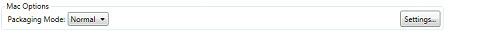
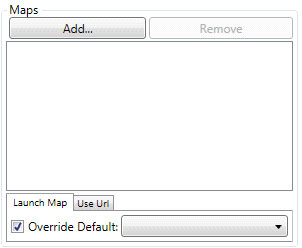
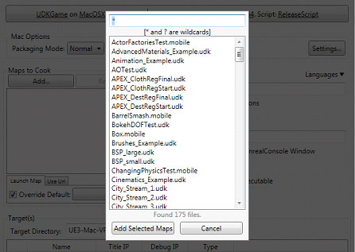
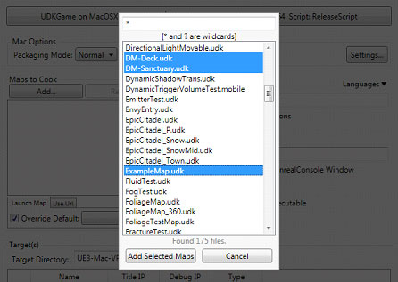
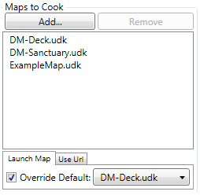
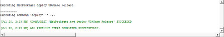

UDN
Search public documentation:
DistributionAppleMacKR
English Translation
日本語訳
中国翻译
Interested in the Unreal Engine?
Visit the Unreal Technology site.
Looking for jobs and company info?
Check out the Epic games site.
Questions about support via UDN?
Contact the UDN Staff
日本語訳
中国翻译
Interested in the Unreal Engine?
Visit the Unreal Technology site.
Looking for jobs and company info?
Check out the Epic games site.
Questions about support via UDN?
Contact the UDN Staff
맥 어플리케이션 배포하기
문서 변경내역: Jeff Wilson 작성. 홍성진 번역.
개요
패키지로 만들고 맥에 deploy
- 환경설정 버튼을 클릭합니다:
환경설정 세팅 대화창이 열립니다.

- 세팅이 다음과 같이 되어 있는지 확인합니다:
Development 용:

Game Platform Game Config Script Config Cook/Make Config UDKGame MacOSX Release_64 ReleaseScript Shipping_32
Shipping 용:

Game Platform Game Config Script Config Cook/Make Config UDKGame MacOSX Shipping_64 FinalReleaseScript Shipping_32
*OK* 버튼을 클릭하여 세팅을 저장합니다. - Mac Options 부분이 이제 보일 것입니다. Mac App Store 용 빌드를 준비하려는 경우 Packaging Mode 가 Mac App Store 로 되어 있는지 확인하고, 아니라면 Normal 로 설정하십시오.

- Settings... 버튼을 클릭하고 Unreal iOS Configuration Wizard 를 열어 게임의 이름, 아이콘, deploy 대상 경로 등을 설정합니다. 자세한 정보는 Unreal MacPackager KR 페이지를 확인해 주세요.
- 다음으로 어플리케이션에 패키징할 맵을 전부 추가해야 합니다. 이 작업은 Maps 부분에서 할 수 있습니다:

Add... 버튼을 클릭합니다. 현재 게임 프로젝트에 있는 모든 맵이 나열된 창이 열립니다.

목록에서 추가하려는 모든 맵을 선택합니다:

Add Selected Maps 버튼을 눌러 맵을 추가하고 창을 닫습니다. 이제 Maps 부분에 맵이 나열될 것입니다:

- 아래 표시된 각 버튼에 클릭하고 각 스텝의 메뉴에 Step Enabled 옵션을 토글시켜 파이프라인 잡 모든 스텝이 켜졌는지 확인합니다.

- Start 버튼을 눌러 파이프라인 잡을 시작합니다. 파이프라인 잡 진행 도중에는
 모양이 표시됩니다. 완료되면 출력창에 결과가 표시됩니다.
모양이 표시됩니다. 완료되면 출력창에 결과가 표시됩니다.

- 게임 패키지가 준비되었습니다. deploy 대상 경로를 맥 상의 공유 폴더로 설정한 경우, 게임 압축을 풀기만 하면 플레이할 준비 끝입니다.
드래그 앤 드롭 인스톨러
최종 사용자가 맥 플랫폼에서 앱 설치를 쉽게 할 수 있도록 하려면, 드래그 앤 드롭 인스톨러를 만들면 됩니다. UDK 게임으로 이런 종류의 인스톨러를 만드는 법 안내가 Mac Installer KR 페이지에 소개되어 있습니다.Mac App Store 지원
요구사항
언리얼 엔진 3 를 사용하여 Mac App Store 용 게임을 개발하기 위해서는 등록된 맥 개발자여야 합니다. 등록된 맥 개발자가 아닌 경우, 맥 개발자 프로그램 사이트에서 등록하시면 됩니다. 주: 애플은 개발자 등록비고 한 해당 99 달러 를 받고 있습니다.맥 게임 제출하기
Mac App Store 에 맥 게임을 제출하려면, 맥을 사용할 수 있어야 합니다. 애플은 Mac OS X 에서만 사용할 수 있는 Application Loader 유틸리티를 사용하여 어플리케이션을 업로드할 것을 요구하고 있습니다. 맥에는 다음과 같은 어플리케이션이 설치되어 있어야 합니다:- Application Loader